12:21 · 23 OPERE
La danza notturna dei libri.
Il filo del discorso
La biblioteca prende vita durante il sonno del narratore: ai libri spuntano mani e piedi, i volumi cambiano scaffale e discutono con il carattere degli autori o dei personaggi che custodiscono. La disputa fra Platone e Aristotele introduce il paradosso di libri che ragionano sulle dottrine non scritte. Fra gli antichi, Boezio tenta una conciliazione; nello scaffale moderno, logici e filosofi entrano in un confronto più rumoroso.
Leggi la sintesi completaRiduci la sintesi
Nietzsche viene distinto dalle raccolte postume e dalle interpretazioni di Heidegger, mentre tre libri critici del filosofo tedesco diventano avversari animati. I poeti si dividono fra declamazione e contemplazione, con Leopardi davanti alla siepe. Nella seconda parte, Barnum protesta per il poco spazio riservato alla letteratura contemporanea e ai libri dello spettacolo; Ridolfi e Morandotti gli oppongono un diverso criterio di scelta. L’episodio mette in scena il gusto personale del lettore e una satira delle gerarchie culturali, del prestigio e del consumo editoriale. Quando Giovanni Drogo segnala il risveglio del padrone dello studio, i libri tornano immobili. Il tono fantastico tiene insieme affetto per i volumi, giudizi letterari e polemica culturale.
I libri nel discorso
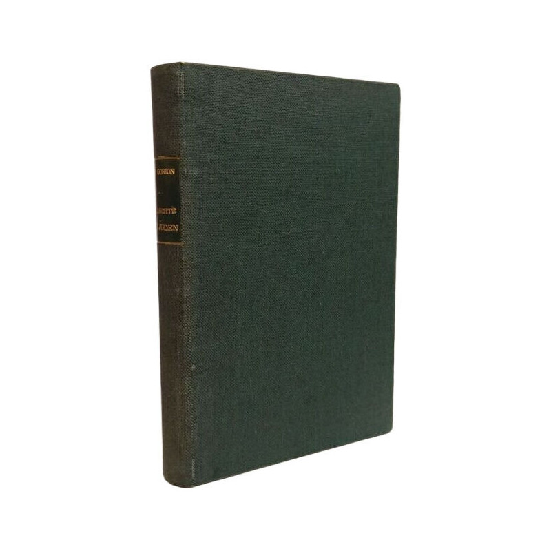
Des Josef Ben Gorion (Josippon) Geschichte der Juden
Note sul riferimento
Fotografia della legatura con titolo al dorso: J. J. Augustin · edizione del testo etiopico a cura di Murad Kamil · prefazione 1937, pubblicazione riscontrata 1938
Legatura autentica fotografata da Créalivres; il frontespizio dello stesso esemplare riscontra titolo, Murad Kamil e J. J. Augustin. La data approssimata del venditore non prevale sui cataloghi e sulla recensione coeva. Non si identifica l’esemplare del filmato.
Titolo tedesco e nome Gorion riconoscibili nella trascrizione automatica; riscontro con l’edizione etiopica curata da Murad Kamil. Il racconto della trasmissione linguistica richiede la precisazione bibliografica.

Settima lettera
Note sul riferimento
Copertina: Carocci · Classici · 2020, ristampa 2024 · a cura di Filippo Forcignanò
Immagine autentica dell’opera, controllata visivamente; l’edizione di riferimento non è attribuita al filmato.
La Settima lettera è annunciata nel confronto fra Platone e Aristotele.
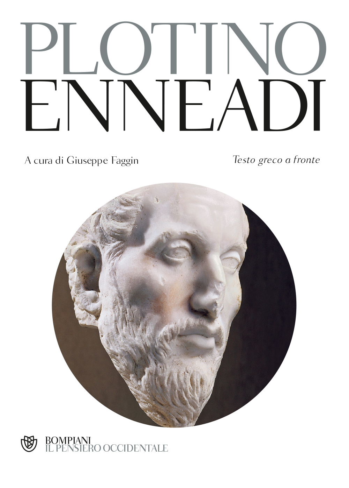
Enneadi
Note sul riferimento
Copertina: Bompiani · 2000 · traduzione di Giuseppe Faggin
Immagine autentica dell’opera, controllata visivamente; l’edizione di riferimento non è attribuita al filmato.
Le Enneadi di Plotino sono nominate con i neoplatonici.

La consolazione della filosofia
Note sul riferimento
Copertina: Bompiani, 2019
Boezio invoca la Consolatio Philosophiae.
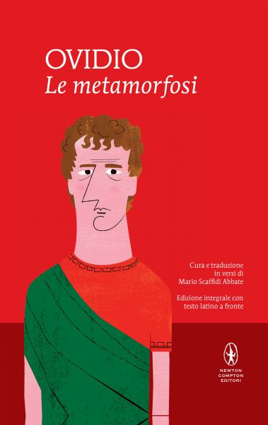
Le metamorfosi
Note sul riferimento
Copertina: Newton Compton · MiniMammut 157 · traduzione di Mario Scaffidi Abbate
Immagine autentica dell’opera, controllata visivamente; l’edizione di riferimento non è attribuita al filmato.
Sono annunciate le Metamorfosi di Ovidio, distinte da Apuleio che compare subito dopo.
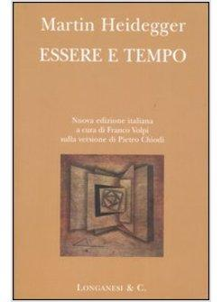
Essere e tempo
Note sul riferimento
Copertina: Longanesi · 2005 · traduzione di Pietro Chiodi, a cura di Franco Volpi
Immagine autentica dell’opera, controllata visivamente; l’edizione di riferimento non è attribuita al filmato.
Essere e tempo di Heidegger è nominato, poi ripreso nella scena dei suoi difensori.

Tractatus logico-philosophicus
Note sul riferimento
Copertina del volume che comprende il Tractatus: Einaudi · Tractatus logico-philosophicus e Quaderni 1914–1916 · 2009
Copertina del volume Einaudi che comprende sia il Tractatus sia i Quaderni 1914–1916. La voce identifica il Tractatus; l’ISBN appartiene al volume contenitore e l’edizione non è accertata nel filmato.
Il Tractatus è annunciato dopo Wittgenstein e i logici.

Il mondo come volontà e rappresentazione
Identificazione probabile
Note sul riferimento
Copertina: Newton Compton · edizione di riferimento
Il mondo di Schopenhauer è una probabile abbreviazione del titolo, senza annuncio della formula completa.

La volontà di potenza
Note sul riferimento
Copertina: Bompiani · 2001 · a cura di Maurizio Ferraris e Pietro Kobau
Copertina autentica della raccolta di frammenti postumi ordinati da Gast e Förster-Nietzsche, come dichiarato anche nell’immagine. Non indica un’opera conclusa da Nietzsche né l’edizione posseduta dal narratore.
La volontà di potenza è nominata; la scheda distingue la raccolta postuma da un libro concluso da Nietzsche.

Nietzsche
Note sul riferimento
Copertina: Adelphi, 2018 · edizione di riferimento
Il Nietzsche di Heidegger è nominato e distinto dall’autore Nietzsche.
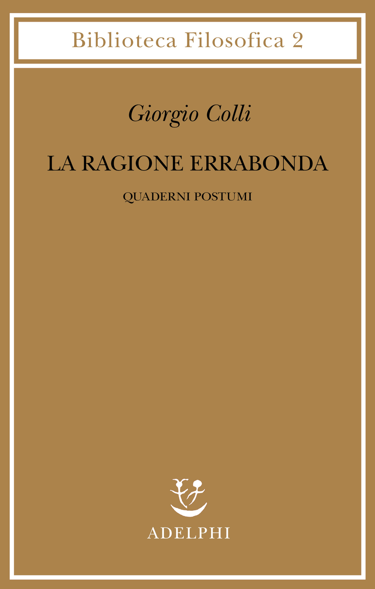
La ragione errabonda. Quaderni postumi
Identificazione probabile
Note sul riferimento
Copertina: Adelphi · Biblioteca Filosofica 2 · a cura di Enrico Colli · opera del 1982
Immagine autentica dell’opera, controllata visivamente; l’edizione di riferimento non è attribuita al filmato.
Il gruppo nominale reso ragione rabbonda e Giorgio Colli suggerisce La ragione errabonda; identificazione da controllare sull’audio.
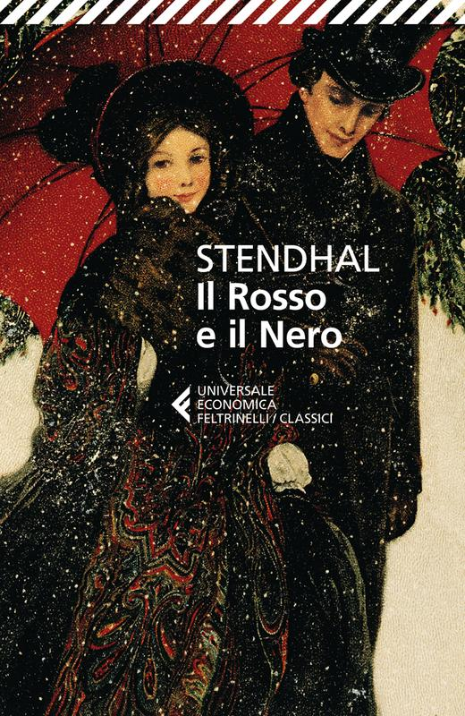
Il Rosso e il Nero (Le Rouge et le Noir)
Note sul riferimento
Copertina: Feltrinelli · Universale Economica I Classici · 2013 · traduzione di Luigi Maria Sponzilli
Copertina autentica della traduzione italiana del romanzo citato con il titolo francese. Nessuna edizione è identificata nel filmato.
Il titolo francese Le Rouge et le Noir è riconoscibile, sebbene deformato nella trascrizione.
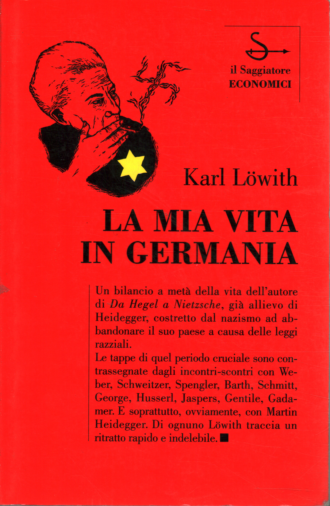
La mia vita in Germania prima e dopo il 1933
Note sul riferimento
Copertina: Il Saggiatore · Economici 42 · 1995 · traduzione di Enzo Grillo
Immagine autentica dell’opera, controllata visivamente; l’edizione di riferimento non è attribuita al filmato.
Karl Löwith e La mia vita in Germania sono annunciati; il titolo esteso è completamento bibliografico.
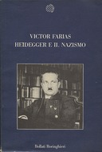
Heidegger e il nazismo
Note sul riferimento
Copertina: Bollati Boringhieri · Nuova cultura 5 · 1988
Immagine autentica dell’opera, controllata visivamente; l’edizione di riferimento non è attribuita al filmato.
Heidegger e il nazismo e Víctor Farías sono annunciati.
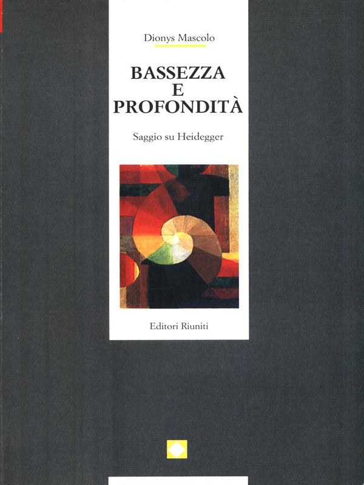
Bassezza e profondità
Note sul riferimento
Copertina: Editori Riuniti · Gli studi · traduzione di Federica Giardini
Copertina autentica Editori Riuniti: nell’immagine il sottotitolo è Saggi su Heidegger, al plurale; il catalogo consultato registra Saggio su Heidegger e l’anno 1993. La voce usa il titolo comune Bassezza e profondità e non attribuisce questa stampa al filmato.
Bassezza e profondità e Dionys Mascolo sono annunciati.

L’infinito
Identificazione probabile
Note sul riferimento
Copertina dei Canti che comprendono L’infinito: Feltrinelli, Universale Economica I Classici, 2016 · Canti
Copertina dei Canti di Giacomo Leopardi, Feltrinelli 2016 a cura di Ugo Dotti. Il riferimento riguarda la singola poesia L’infinito; l’immagine non rappresenta una sua pubblicazione autonoma né l’edizione citata nel video.
Leopardi guida i poeti che contemplano una siepe: probabile allusione alla poesia, titolo non pronunciato.
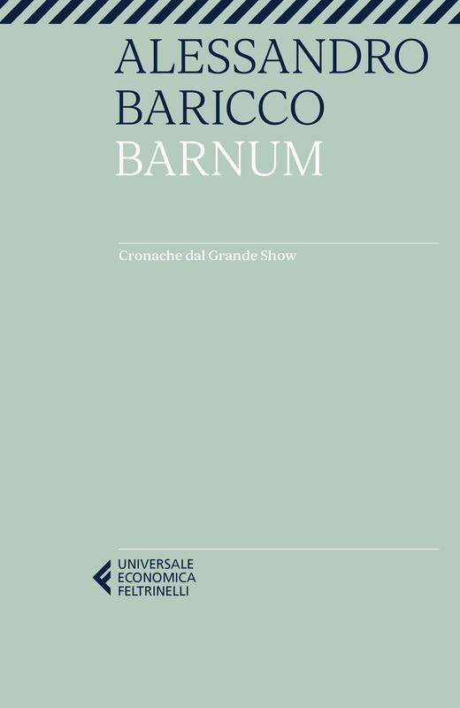
Barnum. Cronache dal Grande Show
Note sul riferimento
Copertina: Feltrinelli · Universale Economica · 2023 · opera pubblicata nel 1995
Immagine autentica dell’opera, controllata visivamente; l’edizione di riferimento non è attribuita al filmato.
Barnum e Baricco sono nominati; il volume è descritto come raccolta di articoli.
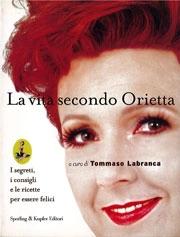
La vita secondo Orietta. I segreti, i consigli e le ricette per essere felici
Note sul riferimento
Copertina: Sperling & Kupfer · 1997 · a cura di Tommaso Labranca
Immagine autentica dell’opera, controllata visivamente; l’edizione di riferimento non è attribuita al filmato.
La vita secondo Orietta, il sottotitolo e Tommaso Labranca curatore sono riconoscibili.
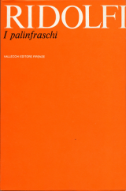
I palinfraschi
Note sul riferimento
Copertina: Vallecchi · Firenze, 1970 · copertina di Bob Noorda
Immagine autentica dell’opera, controllata visivamente; l’edizione di riferimento non è attribuita al filmato.
I palinfraschi di Roberto Ridolfi sono annunciati.
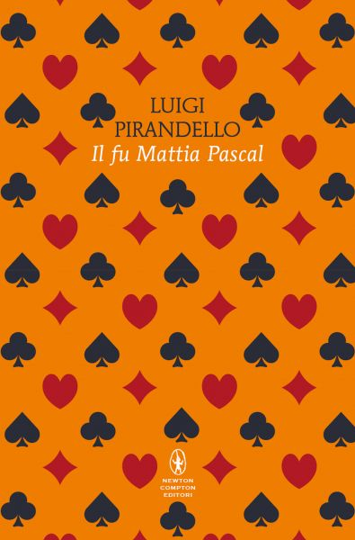
Il fu Mattia Pascal
Identificazione probabile
Note sul riferimento
Copertina: Newton Compton · Classici Pop 23 · edizione integrale a cura di Sergio Campailla
Immagine autentica dell’opera, controllata visivamente; l’edizione di riferimento non è attribuita al filmato.
È nominato Mattia Pascal; associazione probabile al romanzo, senza titolo completo.
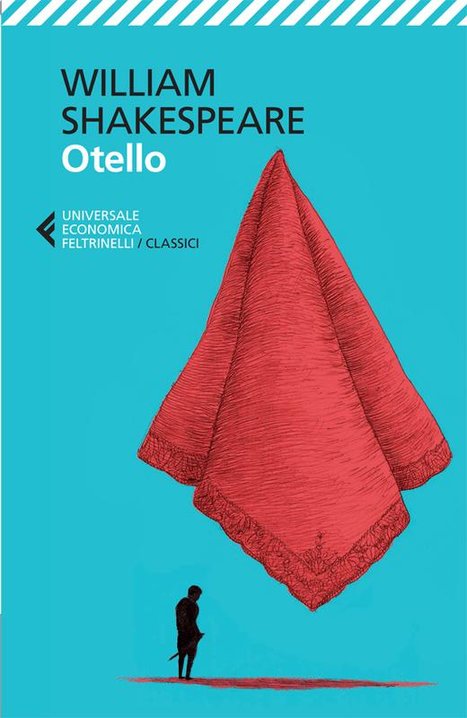
Otello
Identificazione probabile
Note sul riferimento
Copertina: Feltrinelli · Universale Economica I Classici · 2013 · traduzione di Agostino Lombardo
Immagine autentica dell’opera, controllata visivamente; l’edizione di riferimento non è attribuita al filmato.
Otello e Desdemona sono nominati come personaggi: probabile richiamo alla tragedia.

Il Gattopardo
Identificazione probabile
Note sul riferimento
Copertina: Feltrinelli · Universale Economica 900 · 2026
Immagine autentica dell’opera, controllata visivamente; l’edizione di riferimento non è attribuita al filmato.
La voce del Gattopardo interviene nella biblioteca; associazione al romanzo probabile.
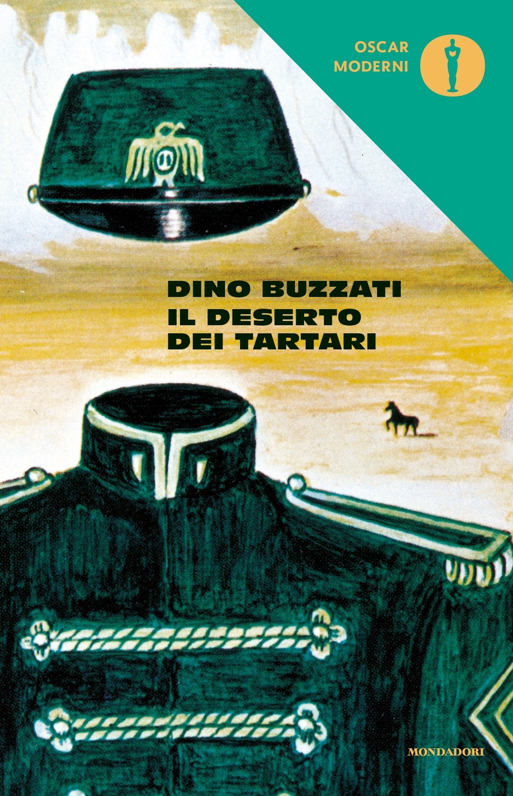
Il deserto dei Tartari
Identificazione probabile
Note sul riferimento
Copertina: Mondadori · Oscar moderni 6 · 2016
Immagine autentica dell’opera, controllata visivamente; l’edizione di riferimento non è attribuita al filmato.
Il tenente Drogo, poi Giovanni Drogo, dà l’allarme: probabile allusione al romanzo di Buzzati.